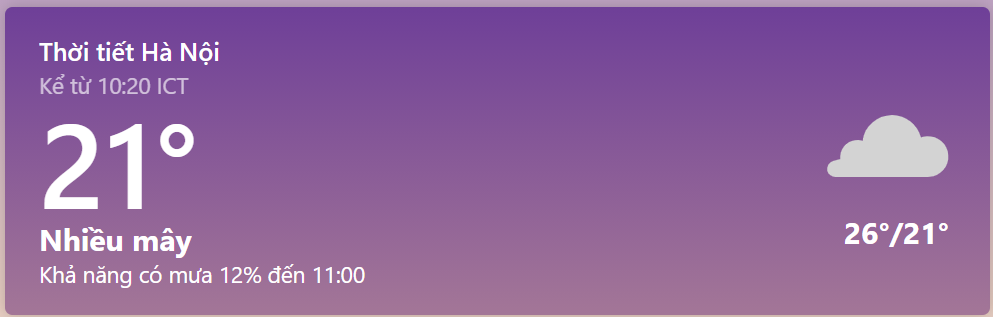
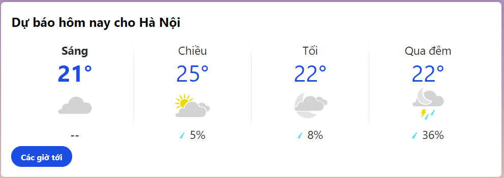

Home Page
News
Harry and Meghan sit down with Oprah

Prince Harry told Oprah Winfrey that the past year of freedom has offered new gifts -- especially quality time with his son Archie.
"No," Harry replied. "I'm really proud of us. I'm so proud of my wife. She safely delivered Archie during a period of time that was so cruel and so mean. Every day I was coming home to Meghan crying and breast feeding Archie ... We did what we had to do."
China has built the world's largest navy. Now what's Beijing going to do with it?

Hong Kong (CNN)In 2018, Chinese President Xi Jinping donned military fatigues and boarded a People's Liberation Army Navy destroyer in the South China Sea. Spread out before him that April day was the largest flotilla Communist-ruled China had ever put to sea at one time, 48 ships, dozens of fighter jets, more than 10,000 military personnel. For Xi, the country's most powerful leader since Mao Zedong, the day was a way point to a grand ambition -- a force that would show China's greatness and power across the world's seven oceans. "The task of building a powerful navy has never been as urgent as it is today," Xi said that day.
China was already in the midst of a shipbuilding spree like few the world has ever seen. In 2015, Xi undertook a sweeping project to turn the PLA into a world-class fighting force, the peer of the United States military. He had ordered investments in shipyards and technology that continue at pace today.
Weather
Now
Prediction
Sport
Man City - MU: Phủ đầu bậc thầy, nhuộm đỏ thành Manchester
Dù bị đánh giá thấp hơn Man City nhưng Man United đã có khởi đầu như mơ khi mở tỷ số ngay từ phút thứ 2 của trận đấu. Bắt nguồn từ tình huống lên bóng đầu tiên của "Quỷ đỏ", Martial bị Jesus đốn ngã trong vòng cấm và MU được hưởng quả phạt đền ngay phút thứ 1.

Trên chấm 11m, Bruno Fernandes đã không mắc sai lầm nào để đưa đội khách vượt lên. Bàn thắng quá sớm giúp MU chủ động hơn trong việc tổ chức lối chơi phòng ngự phản công, trong khi Man City lại dồn lên gây áp lực cực lớn lên phần sân đối thủ.